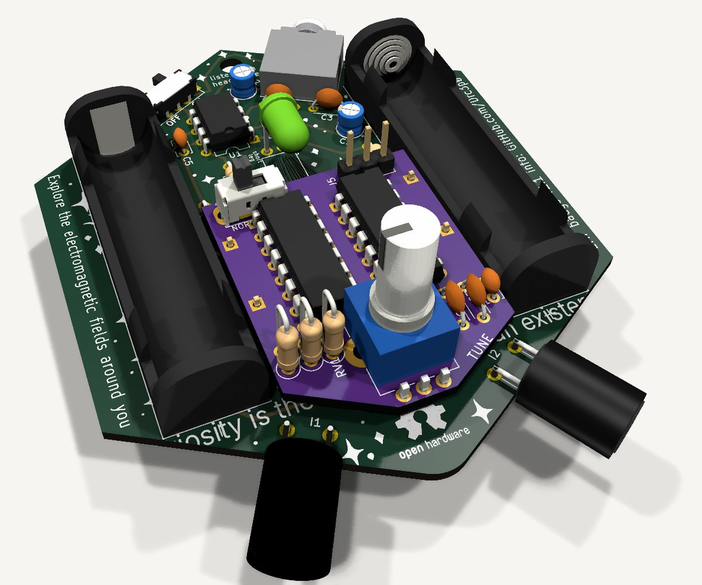

slopswap / emf badge
A tuning knob for the EMF Explorer Badge
The badge hears fields from 20 Hz to 20 kHz. One analog switch chip, one oscillator and a pot should let it tune in everything from 20 kHz up toward 1 MHz, for between 50 cents and two dollars of parts.
Simulated, not yet measured. A first version is wired on a breadboard and its bench test is next. Every electrical figure here comes from circuit simulation or a datasheet. Every price is a distributor listing read on 13 November 2026.
The short version
- The pickup coils already catch fields far above hearing. Those fields never reach the headphones, because the amplifier fades above 16 kHz and ears stop near 20 kHz.
- A switch between the coil and the amplifier, flipped tens of thousands of times a second, shifts a slice of that band down into hearing. Engineers call that switch a chopper. A knob sets how fast it flips, and so which slice you hear.
- The build to make: one 74HC4053 analog switch chip between the coils and the amplifier, flipped by one gate of a 74HC14 with a pot. Both are through-hole and both run from the badge's two AAA cells.
- What it costs: for both ears, about $0.50 a badge with low-cost chips or $1.90 with Texas Instruments chips, at 1,000 pieces and with an ordinary 9 mm pot. The pot is the largest item either way.
- The cheapest version that still sounds right uses the switch chip as its own oscillator and tunes one ear, for about $0.40.
- A CMOS 555 works and so do two transistors, but neither saves money. Swapping the switch chip for a single transistor saves little and adds 25 dB of hiss.
- The dial runs from 26 kHz to about 1 MHz on one pot. The top end is ragged on purpose: touchy to tune, and near the limits of the parts.
- Comb mode, which folds every band into hearing at once, is a three-position switch and two more passives.
- For a nicer tone, a capacitor in series takes most of the hum out while tuning. Reversing the coil instead of grounding it does more: twice the note, no hum and less hiss, for a second switch chip and a change to the coil wiring.
Try the knob
This is a model of what the knob does, not a recording. The coloured spikes are things that put out fields above hearing, at typical frequencies. Turn the sound on, then move the knob.
- Badge today, then Tuned. Today only the mains hum gets through. Tuned, whatever sits in the amber window becomes a note.
- Move the knob slowly through the fluorescent ballast at 40 kHz. The note falls, vanishes as the knob crosses 40 kHz, and rises again. The note is the distance between the knob and the source.
- Park next to the induction hob at 25 kHz. It still buzzes. The switch moves a signal down without flattening it.
- Set the knob near 41.5 kHz and turn the ballast off with its button under the dial. The RFID reader at 125 kHz ticks faintly. That is the window at three times the chopper frequency.
- Switch to Comb and bring the knob down to about 30 kHz. Every source turns up at once, each more quietly. The knob no longer chooses a source. It slides all the pitches.
Why flipping a switch moves a sound
Point a strobe light at a spinning fan. If the strobe flashes almost in time with the blades, the fan seems to turn slowly, because each flash catches the blades a little further round than the one before. The fan has not slowed down. You are seeing the difference between two fast rates.
The switch does this to the coil's signal. Each time it closes, it lets a short piece of the wave through to the amplifier. When the switch runs almost in time with the wave, each piece comes from a little further along the wave than the last. The amplifier is too slow to follow the pieces one by one, so it follows their average, and the average drifts up and down at the difference between the two rates. A 40 kHz field chopped at 39 kHz comes out as a 1 kHz tone.
Four things follow from that picture.
- The note is the difference. Tune the switch closer to the source and the note falls. Pass through it and the note rises again. Two sources the same distance above and below the switch land on the same note.
- The window is as wide as the amplifier. Anything within about 16 kHz of the switch frequency comes out in the audible range. Further away, the difference is too high for the amplifier and the ear.
- The tone is about a third of the size of the wave that made it (1/π, or 10 dB down). Half the wave is thrown away and the rest is averaged. It is the same third at every frequency.
- It stays in proportion. Twice the field gives twice the tone, so moving closer gets louder, and anything that pulses, buzzes or wobbles keeps doing it.
A square wave also contains its own third and fifth harmonics, so the switch opens fainter windows at three and five times its frequency, a third and a fifth as loud. Shorten the time the switch is on, with the slider above, and the windows multiply: a switch that passes for a tenth of each cycle has windows of nearly equal size at one, two, three, four and five times its frequency, each a tenth of the size. That is comb mode.
Here is the same thing as a circuit, with the badge's own values: the pickup coil, one section of the 74HC4053 and the amplifier, running in Paul Falstad's circuit simulator.
Open this circuit full-size at falstad.com
Why the badge is already most of the way there
On the badge each coil feeds its amplifier through 100 Ω, which is close to a short circuit. That turns out to matter. A faster field induces more voltage in the coil, but the coil's own inductance holds back a faster current by exactly as much. The two cancel. The current in the coil follows the strength of the field and ignores its frequency, so a 1 MHz field puts as much current through the coil as a 10 kHz field of the same strength.
What stops the badge hearing it comes after the coil. The 100 pF across the feedback resistor rolls the amplifier off above 16 kHz, and then hearing gives out. The switch sits ahead of all that. It turns the high-frequency current into an audio-frequency current before the amplifier sees it, so the roll-off never touches it.
The circuit
There are two blocks. The switch does the shifting. The oscillator and its pot are the dial. Both run between the badge's −1.5 V and +1.5 V rails, which puts the signal, at 0 V, in the middle of the switch's range.
The switch
It has to be a two-way switch. While the amplifier side is disconnected, the coil must still see a short circuit, or its current has nowhere to go. In simulation a switch that only opens and closes the path, with no throw to 0 V, gave a tone with extra whistles on it and a mute that leaked. One section of a 74HC4053 does both throws and never connects them at the same moment.
The chip holds three such sections. Section 1 (pins 14, 13, 12, select 11) takes one coil and section 2 (pins 15, 1, 2, select 10) takes the other, both flipped by the same oscillator. Section 3 is spare.
The switch's resistance hardly matters while chopping, because the coil behaves as a current source. A 74HC4053 on 3 V is somewhere between 100 and 200 Ω, and more as the cells run down; the datasheet does not pin it down at so low a supply. In simulation 400 Ω and a slower switch, standing in for nearly flat cells, still gave the full tone.
The oscillator
One Schmitt inverter with a resistor from its output back to its input and a capacitor from its input to the rail. The capacitor charges until the gate flips, discharges until it flips back, and repeats. With 2.2 kΩ, a 100 kΩ pot and 330 pF it runs from about 26 kHz to 1 MHz on fresh cells, and from 21 kHz to about 0.8 MHz on cells run down to 2 V. A second gate of the same chip squares the edges up and drives the switch. Expect the whole range to sit 30 % higher or lower from one chip to the next; it is a knob, not a calibrated dial.
The top of that range is ragged, and that is the bargain. An earlier draft used 10 kΩ and stopped at 255 kHz. The smaller resistor costs nothing and lets the knob reach on toward 1 MHz, where three things stop being tidy.
- Tuning. Frequency goes as one over resistance, so the top is crowded. With a linear pot everything above 100 kHz sits in the last quarter of the turn and everything above 350 kHz in the last twentieth. Up there the knob is for sweeping through sources, not for parking on one. A log pot wired backwards spreads the octaves far more evenly; the dial above lets you feel both.
- The parts. In simulation the tone holds, 57 to 59 mV all the way to 1 MHz. What grows is an offset at the amplifier's output: 60 mV at 40 kHz, 0.16 V at 600 kHz and about 0.24 V at 1 MHz, on fresh cells and tired ones alike. The real chip's charge injection is not modelled and will add to it. On tired cells the oscillator itself stops near 0.8 MHz.
- The coil. Its ferrite core was never meant for this, and its losses up there are unknown.
If the top end turns out to be too fiddly, a larger fixed resistor pulls it back in: 4.7 kΩ stops near 500 kHz and 10 kΩ near 250 kHz.
Normal listening
A mode switch that holds the select pin high leaves the coil connected to the amplifier through the chip. That is not quite the stock badge: the chip's resistance sits in the coil's path and takes about 2.5 dB off everything below 300 Hz on fresh cells, and about 6.5 dB once they are down to 2 V. If that matters, a two-pole switch can take each coil straight to its resistor instead, which leaves the stock signal path in normal listening. The schematic generator has that as an option.
One thing to check on the badge itself
This design needs the 100 pF feedback capacitors, C5 and C6, that the V2 schematic shows. The KiCad file in the public repository shows 10 pF. With 10 pF the oscillator's leak at the amplifier output swings ±0.6 V in simulation, against ±0.15 V with 100 pF, and that is most of the amplifier's headroom on tired cells.
Parts for both ears
| Part | Value | Job |
|---|---|---|
| Analog switch | 74HC4053, DIP-16 | sections 1 and 2 chop the two coils; section 3 is spare |
| Schmitt inverters | 74HC14, DIP-14 | gate 1 oscillates, gate 2 drives the switches; two more gates make comb mode |
| Pot | 100 kΩ, log taper | the knob; smaller pots cover less of the range |
| Resistor | 2.2 kΩ | sets the top of the range |
| Capacitor | 330 pF | sets the range |
| Capacitor | 100 nF | across the rails, beside the chips |
| Mode switch | two- or three-position slide | normal, tuned, and comb if fitted |
To put this into KiCad, the schematic generator makes a KiCad 9 schematic of this build or of the transistor one, with footprints and LCSC part numbers filled in, either on its own for pasting into the badge's schematic or with the badge drawn alongside.
The switch: what else could do it
The switch chip is where the sound quality is decided. Every alternative was simulated on the badge's ±1.5 V with the same 40 kHz field, and again on ±1.0 V to stand in for tired cells.
| Switch | Per ear | Tone | Hiss against the stock badge | On tired cells | Verdict |
|---|---|---|---|---|---|
| 74HC4053 section | a third of a chip | 59 mV | 10 dB quieter | 59 mV | Recommended |
| 74HC4066, two on-off switches | half a chip, and both phases of the oscillator | same circuit | same | same | Works more wiring for no gain |
| 74LVC1G3157, surface-mount | one SOT-23-6 chip | same circuit, a few ohms | same | specified down to 1.65 V | Works the best switch, if surface-mount is acceptable |
| One FET to the rail: BSS138 and 1 µF | one transistor, one capacitor | 72 mV | 15 dB noisier | 71 mV | Works, hissy surface-mount only |
| The same with a 2N7000 | one transistor, one capacitor | 71 mV | not run | 36 mV | No a typical part fades as the cells sag, and a worst-case part never turns on |
| One NPN to the rail: 2N3904, 1 µF, 10 kΩ | one transistor, two passives | 55 mV | 12 dB noisier | not run | No it also adds low-pitched tones of its own |
The hiss is the difference that matters. With the switch chip, the amplifier's input is disconnected for the half of each cycle that the coil is grounded, so the op-amp has nothing to amplify. With a transistor to the rail, the coil and R2 are grounded together, and for that half-cycle the op-amp amplifies its own noise about a thousand times. The transistor version is 25 dB hissier than the chip while it is tuning.
JFET and diode switches were not simulated. A JFET needs its gate driven several volts beyond the signal to turn off, which ±1.5 V rails cannot be relied on to give, and a diode switch takes more parts than the chip it would replace.
The oscillator: four ways to make the dial
| Oscillator | Range on fresh cells | On cells at 2 V | Time high | Verdict |
|---|---|---|---|---|
| A. One 74HC14 gate | 26 kHz to 1.0 MHz | 21 to 810 kHz | 42 % | Recommended the spare gates give the buffer and comb mode for nothing |
| B. One CMOS 555 | 31 to 735 kHz | the same | 50 % | Works the steadiest dial, and comb mode is built in; costs more than the 74HC14 |
| C. Two 74HC4053 sections | 25 to 555 kHz | the same | 50 % | Works no second chip; leaves one section, so it tunes one ear |
| D. Two 2N3904 | about 50 to 300 kHz | the bottom of the range stops following the pot | 40 to 48 % | Works, narrowly a 6 to 1 range, 0.6 to 1.1 mA from the cells, nine parts |
| Bipolar 555 (NE555) | needs 4.5 V | No | ||
| CD4000-series gates | too slow on 3 V; fine on 5 V, which is what the breadboard build uses | No | ||
The 555 has to be a CMOS one: a TLC555, LMC555 or ICM7555. Wired with its timing resistor from the output pin, it gives an even square wave whose frequency does not move as the cells run down, because its thresholds are fixed fractions of the supply. The 74HC14's thresholds are not, which is why its range sags by a fifth. The 555 and the two-section oscillator stop short of 1 MHz with the same 2.2 kΩ, because their own delays are longer. Its uneven 42 % also opens a faint extra window at twice the oscillator frequency, about a quarter the size of the main one. Neither costs anything you would hear as a fault.
The 555 figures assume a quarter of a microsecond of delay inside the chip. The TLC555 datasheet's graph runs up to half a microsecond at low supply, so the top of its range could sit lower. The transistor pair is the only one of the four simulated with real device models.
Comb mode
Tuned, the switch passes for half of each cycle and you hear one window. Give it a short pulse instead and it opens a window at every multiple of the oscillator frequency at once. With the oscillator near 30 kHz the windows overlap, so everything from 15 kHz to about 300 kHz is audible together. The knob stops being a tuning dial and becomes a pitch control.
Why a short pulse hears everything
Go back to the strobe and the fan. A strobe that flashes 30 times a second freezes a fan turning 30 times a second. It also freezes one turning 60, 90 or 150 times a second, because each of those is back in the same place at every flash. That only works if the flash is short. A flash that stays on for half the time between flashes still shows the slowest fan, and smears the faster ones into a blur.
The switch is the strobe. Tuned, it is on half the time, which is the long flash: it catches fields near the oscillator frequency well, fields near three and five times that frequency faintly, and nothing near the even multiples. In comb mode it is on for about 3 µs in every cycle, which is the short flash. A field near any multiple of the oscillator frequency now comes out as a tone. Those multiples are the teeth of the comb.
Three things set what the comb does.
- The pulse width sets the reach. A tooth fades as the pulse becomes a large part of one cycle of the field, and vanishes where the pulse is exactly one cycle long. That is 333 kHz for a 3 µs pulse and 1 MHz for a 1 µs pulse. Past it a second, much fainter set of teeth carries on.
- The pulse width also sets the loudness. The switch passes for a small part of each cycle, 9 % for 3 µs at 30 kHz, and every tone is about that fraction of the wave instead of the 32 % that tuning gives. A shorter pulse reaches higher and is quieter everywhere.
- The oscillator frequency sets the spacing. Each tooth hears 16 kHz either side of itself. At 30 kHz the teeth are close enough for those windows to overlap, and nothing between 15 kHz and the reach is missed. At 60 kHz there are gaps.
- Drag the field slowly from left to right. A note falls to zero and rises again at every tooth, quieter each time, and all but stops at the reach.
- Shorten the pulse to 1 µs. The teeth run all the way to 1 MHz, and every one of them is a third as tall.
- Press Half on, as when tuning. Every second tooth vanishes and the rest fall away quickly: that is why tuning hears one band.
- Raise the oscillator to 60 kHz. Gaps open between the windows, and a field in a gap is not heard at all.
What it sounds like
Every source in reach plays at once, each at its distance from its nearest tooth. Turn the knob and each note moves at its own speed: a source near tooth 5 moves five times as fast as one near tooth 1, and a source just below a tooth moves the opposite way to one just above it. So in comb mode the knob is for nudging a sound to a comfortable pitch, not for finding it. Comb mode answers what is out there; tuning then picks one thing and gives it three times the level.
What comb mode gives up is loudness. In simulation the same field that gives 59 mV when tuned gives 17 mV at 31 kHz, 17 mV at 61 kHz, 12 mV at 151 kHz, 6 mV at 241 kHz and 2 mV at 301 kHz. Hiss falls further still, to about 26 dB below the stock badge, and ordinary sound drops to 9 % with everything else. The amplifier's output is then mostly ripple at the oscillator frequency. It is above hearing, and in the frame below a small low-pass standing in for the ear takes it off so that the note shows.
Open this circuit full-size at falstad.com
Adding it to the build
On the recommended build the comb costs a capacitor, a resistor and a third position on the mode switch. The pulse is a fixed 2.8 µs or so, which puts the reach near 350 kHz. Keep the knob in the lower part of its travel: above about 180 kHz the pulses fill more than half of each cycle and it stops being a comb.
| Oscillator | Added for comb mode | How well |
|---|---|---|
| A. 74HC14 | 330 pF, 6.8 kΩ, two spare gates, a three-position switch | A fixed pulse of about 2.8 µs (calculated) |
| B. CMOS 555 | 18 kΩ and a two-pole three-position switch that rewires it as the standard 555 circuit | A steady 3 µs pulse from 44 to 139 kHz (simulated). The neatest of the four |
| C. Two 74HC4053 sections | a diode and 15 kΩ across the timing resistor, and a switch | Works at the low end of the dial, but the pulse narrows from 3.6 µs to under 1 µs as the knob goes up (simulated) |
| D. Two 2N3904 | unequal base resistors | Not worth it: it stalls at one end of the pot |
A nicer tone
Tuned in, the badge plays three things at once: the note you tuned to, the mains hum it always plays, now at half its usual level, and ripple at the oscillator frequency that nobody hears but the amplifier has to carry. Two small filters each take one of those out, and one larger change takes out two. None of them is in the recommended build. All were simulated with a 40 kHz field tuned to a 1 kHz note and 60, 180 and 300 Hz hum induced in the coil alongside it.
| While tuning | 1 kHz note | 60 Hz hum | 180 Hz hum | 300 Hz hum | Oscillator ripple | Hiss, against the stock badge |
|---|---|---|---|---|---|---|
| Recommended build, no filter | 59 mV | 55 mV | 53 mV | 51 mV | 54 mV | about −10 dB |
| 0.47 µF in series | 64 mV | 17 mV | 43 mV | 54 mV | 51 mV | not run |
| 0.22 µF in series | 72 mV | 8 mV | 25 mV | 41 mV | 51 mV | about −8 dB |
| 0.1 µF in series | 90 mV | 4 mV | 12 mV | 20 mV | 51 mV | not run |
| 390 pF more across the feedback | 58 mV | 58 mV | 56 mV | 53 mV | 13 mV | about −11 dB |
| 0.22 µF and 390 pF | 71 mV | 8 mV | 25 mV | 42 mV | 12 mV | about −8 dB |
| Reversing the coil, even square wave | 126 mV | 0 mV | 0 mV | not run | 0 mV | about −22 dB |
| Reversing the coil, 74HC14's 42 % | 123 mV | 11 mV | 11 mV | not run | 10 mV | not run |
Levels at the amplifier output, from badge_filter.py. The hum is 0.5 mV of each frequency induced in the coil, which gives about 0.1 V of each on the stock badge. The hiss figures move by a decibel or two from run to run.
A capacitor against the hum
A capacitor between the switch and R2 lets the note through and holds the hum back. With 0.22 µF the 60 Hz hum drops by 16 dB and the 180 Hz by 7 dB. The capacitor also resonates gently with the coil, so notes around 600 Hz to 1 kHz come out about a quarter louder than without it, and notes below 300 Hz fade. A smaller capacitor does more of both: 0.1 µF takes 23 dB off the 60 Hz and makes notes near 1 kHz stand out, 90 mV at 1 kHz against 62 mV at 600 Hz and 71 mV at 2 kHz.
It cannot stay in the path for normal listening. Held at pass with 0.22 µF in series, the badge loses 28 dB of its 60 Hz and 13 dB of its 300 Hz, and hum is most of what the stock badge plays. So the capacitor needs a bypass that closes for normal listening.
A capacitor against the shrillness
Another 390 pF across each feedback resistor moves the amplifier's corner from 16 kHz down to 3.2 kHz. Notes above that fade, by 4 dB at 4 kHz and 7 dB at 8 kHz, so an off-tune source is a murmur and not a whistle. The oscillator's ripple at the output falls to a quarter, which gives the amplifier its headroom back. It does little for hiss, about 2 dB, because the hiss is already concentrated at low pitches.
The price is a narrower window, about 3 kHz either side of the oscillator where it was 16 kHz. That makes tuning more selective and the crowded top of the dial harder still to catch. It also has to switch out for normal listening, or the stock badge loses its top end.
Switching them in and out
Both filters for both ears come to one 74HC4066, four capacitors and a mode switch with a second pole. The TI SN74HC4066N is from $0.55 at LCSC; a low-cost one was not priced. Fitting only the hum capacitors needs half the chip.
Or reverse the coil instead of grounding it
The recommended switch sends the coil to the amplifier for half of each cycle and to 0 V for the other half. Give the coil's other end a switch section of its own, and the pair can swap the coil's two ends instead: one way round for half the cycle, the other way round for the rest. Nothing is thrown away, and three things change in simulation.
- The note doubles, from 59 mV to 126 mV.
- The hum cancels. Hum is the same in both halves of the cycle, so reversing it every half-cycle averages it to nothing. With a perfectly even square wave none is left. With the 74HC14's 42 % the hum is down 14 dB; a CMOS 555 or the two-section oscillator gives the even wave.
- The hiss falls by another 12 dB or so, to about 22 dB below the stock badge. The reversing switch makes the coil look like a high impedance to the amplifier's own noise.
It costs a second 74HC4053 for two ears, nine cents at low-cost prices, and a different route for the coils: both ends of each coil go to the chips, where today one end goes to 0 V. Normal listening then passes through two switch sections, not one, so it loses a little more bass unless it is bypassed. This is a bigger change than a filter and it is not in the recommended build, but on a new board it is the one worth trying first. The switches were simulated as ideal, so real charge injection and mismatch will leave some ripple and some hum.
What each build costs
Prices for the parts that differ between builds. "From" means the lowest price break the distributor shows, without the quantity.
| Part | Package | Brand-name | Low-cost |
|---|---|---|---|
| 74HC4053 | DIP-16 | TI CD74HC4053E: $0.57 at 1,000, $1.14 for one (DigiKey) | HGSEMI 74HC4053N: from $0.09 (LCSC) |
| 74HC14 | DIP-14 | TI SN74HC14N: $0.60 at 1,000, $1.22 for one (Mouser) | HGSEMI 74HC14N: from $0.09 (LCSC, out of stock when read) |
| CMOS 555 | DIP-8 | TI TLC555CP: $0.69 at 1,000, $1.40 for one (Mouser) | the same part at LCSC: from $0.40 (out of stock when read) |
| 2N3904 | TO-92 | $0.023 at 1,000 (LCSC) | |
| BSS138 | SOT-23 | from $0.011 (LCSC) | |
| 74LVC1G3157 | SOT-23-6 | TI SN74LVC1G3157DBVR: from $0.049 (LCSC) | |
| 74LVC1G14 | SOT-23-5 | TI SN74LVC1G14DBVR: from $0.032 (LCSC) | |
| Pot, 9 mm | through-hole | Bourns PTV09A, 100 kΩ linear: $0.74 at 1,000 (Newark) | Alps RK09K: $0.32 at 1,000 (LCSC; the part priced is the 10 kΩ one) |
And the builds, as chips and transistors plus the pot:
| Build | Ears | Comb mode | Low-cost | Brand-name | Verdict |
|---|---|---|---|---|---|
| 1. 74HC4053 and 74HC14 | both | two passives | $0.50 | $1.91 | Recommended |
| 2. 74HC4053 alone, as switch and oscillator | one | a diode and a resistor | $0.40 | $1.30 | Cheapest that sounds right |
| 3. 74HC4053 and a CMOS 555 | both | one resistor | $0.80 | $2.00 | Works steadier dial for 30 cents more |
| 4. 74HC4053 and two 2N3904 | both | no | $0.45 | $1.35 | Works saves a nickel on build 1 and loses range |
| 5. No chips: two 2N3904 and two BSS138 | both | no | $0.39 | $0.80 | Works, hissy |
| 6. Surface-mount: two 74LVC1G3157 and a 74LVC1G14 | both | needs a second gate | $0.45 | $0.87 | Works if the board is machine-assembled anyway |
Low-cost uses the HGSEMI chips and the $0.32 pot. Brand-name uses the TI chips and the $0.74 pot; the transistors and surface-mount parts are the same LCSC prices in both columns. Not included, because they were not priced: ten to fifteen cents of resistors and capacitors, the mode switch, sockets, and board area. Machine assembly for build 6 is not included either.
At low-cost prices every build but the 555 one sits within eleven cents of the others, and in each of those the pot costs more than all the silicon. So the choice between them is about sound and ease of assembly, not chip count. At brand-name prices the second chip is the 60 cent question, and build 2 answers it by tuning one ear.
The knob. These totals use an ordinary 9 mm shaft pot. Pots from 10 kΩ to 100 kΩ work, though only the larger values reach the top of the range, and cheaper ones exist, down to a four-cent trimmer that takes the low-cost build to $0.22. Which pot to buy prices them, including position sensors used as sliders.
Other ways to cut cost
- The pot. It is the largest single cost and the easiest to change. Which pot to buy prices the alternatives, from four-cent trimmers to slide position sensors.
- No series capacitor. An earlier draft of this circuit put 10 µF between the switch and R2 to block the op-amp's offset. On the badge's rails it is not needed: without it the tone is unchanged and a 1 mV offset leaves 60 mV of DC at the output, less than the stock badge has.
- One range. One capacitor and one pot cover 26 kHz to about 1 MHz. A range switch and a second capacitor would make the top easier to tune, for the price of the switch.
- One ear. Tuning one ear and leaving the other normal saves the oscillator chip (build 2), and may be the nicer instrument. That is a choice to make by listening.
- No bypass switch. Holding the chip at pass for normal listening costs 2.5 to 6.5 dB of bass and saves a two-pole switch.
- No 100 Ω resistors. With the chip in the coil's path, its own resistance can do the job of R1 and R2. In simulation the tuned note, the comb and the hiss do not change: the note goes from 59 to 61 mV. Normal listening through the chip then sits within 0.5 dB of the stock badge when the chip is 120 Ω, in place of 2.5 dB down. The level now follows the chip, though: +0.7 dB at 70 Ω, −2 dB at 200 Ω and −5 dB at 400 Ω, which is where tired cells may put it. The offset at the amplifier's output also grows, most at the top of the dial: 0.34 V in place of 0.20 V at 800 kHz. It does not go with a bypass switch, which would then join the coil straight to the op-amp and lift everything below 300 Hz by 2 to 3 dB. (badge_noresistor.py)
- A microcontroller instead of the oscillator. A part costing about ten cents (not priced here) could be the oscillator and add an automatic sweep. It is surface-mount, needs programming on the line, and is one more thing for the coils to hear. Left out.
What the simulations say
| Question | Simulated answer, recommended build on ±1.5 V |
|---|---|
| How big is the tone? | A 40 kHz field chopped at 39 kHz gives a 1 kHz tone of 59 mV at the amplifier output. Today the same field leaves 73 mV of 40 kHz there, which nobody hears. |
| Does it fall off higher up? | Not in the model: 59 mV at 200 kHz, 59 mV at 600 kHz and 57 mV at 1 MHz. An offset builds at the amplifier output instead: 60 mV at 40 kHz, 0.16 V at 600 kHz and 0.24 V at 1 MHz. |
| And on tired cells? | 59 mV at 40 kHz and at 200 kHz on ±1.0 V, with the switch modelled as 400 Ω and 150 ns, and 60 mV at 1 MHz with a 0.25 V offset. The oscillator only reaches about 0.8 MHz there. |
| Is it hissier than the badge? | No. The op-amp's own noise at the output is 10 dB lower while tuning than on the stock badge. The tone is also 10 dB down, so a tuned-in source is about as clean as an audible one is today. |
| Does the oscillator leak into the sound? | Some of it reaches the output, always at the oscillator frequency, so above hearing. It swings ±0.15 V of the amplifier's ±1.2 V. |
| What happens to ordinary sound while tuning? | It passes at half level, mixed with whatever is in the window. |
How far to trust this. The models are simple fits to datasheet numbers, run in ngspice. The 74HC4053 is a pair of ideal switches with a resistance, a delay and 2 pF of feedthrough, and its resistance on 3 V and 2 V is an estimate; the 74HC14 and the 555 are threshold switches with the datasheet's thresholds. The comb-mode tones came out within 0.5 mV of the textbook formula. Not modelled: the real chip's charge injection, losses in the coil's ferrite, and the coils picking up the oscillator through the air.
The scripts
All of this can be rerun. The scripts are plain Python: they write ngspice netlists, run them and print the figures quoted on this page. They need Python 3 with numpy, and ngspice on the path. Keep the files in one folder.
| File | What it does |
|---|---|
| badge_core.py | The shared models: coil, amplifier and the switch options. The others import it. |
| badge_chop.py | Tone, leak and output swing for the 74HC4053 section up to 1 MHz, the one-transistor shunts and comb mode. |
| badge_hiss.py | Hiss for each way of chopping, against the stock badge. |
| badge_osc.py | Frequency range and duty cycle of the four oscillators. |
| badge_pots.py | The 74HC14 oscillator with pots from 10 kΩ to 100 kΩ. |
| badge_filter.py | The tone filters and the reversing chopper: note, hum, ripple and hiss. |
| badge_passband.py | What the switch and a series capacitor do to ordinary sound in normal listening. |
| badge_noresistor.py | The same circuit with the 100 Ω input resistor left out: ordinary sound, the tuned note, the comb, the offset and the hiss. |
| chopper-falstad.txt, comb-falstad.txt | The two Falstad circuits shown above, as text to import into the simulator. |
All ten files in one zip. Written against ngspice 42. The hiss figures move by a decibel or two from run to run, because the noise source is random.
What to check on the bench first
- Does it sound good? Build 1 on one ear, near a phone charger and an induction hob. Everything else is secondary.
- The oscillator's leak. A scope on the op-amp output while tuning. If it swings more than about ±0.3 V, look at the feedback capacitor's value first.
- Tired cells. Repeat on two cells at about 1.0 V each. The simulation says the tone holds; the 74HC4053's resistance down there is the least certain number on this page.
- The top of the dial. How far up the tone really holds, and how much offset builds at the amplifier output. Above a few hundred kilohertz the coil's core, the switch's speed and its charge injection are all unknowns.
- The pot. Linear against log, by feel.
- Comb mode, once tuning works: whether 17 mV where tuning gives 59 mV is loud enough to be worth a switch position.
Or as an add-on board
One more way to build it leaves the badge's layout alone. The two 100 Ω resistors each sit between a coil and an amplifier input, so their four holes are exactly the four points the chopper has to come between. A small board could stand on pins in those holes, carry the resistors itself, and hold the whole tuning circuit.

More detail
- A KiCad schematic of the chopper
Pick the options and download a KiCad 9 schematic with symbols, checked footprints and LCSC part numbers. Also the proposed add-on board. - Which pot to buy
Every kind of pot that works as the knob, priced: trimmers, shaft and slide pots, thumbwheels, and position sensors used as sliders. - EMF Explorer Badge: two upgrades
The earlier survey this grew from: frequency dividers, the first chopper sketches, automatic tuning, and the single-AA supply, with schematics and prices. - Breadboard prototype and bench notes
The 5 V prototype built from parts on hand: breadboard drawings, transistor substitutes, the three-range oscillator to 1 MHz, and what the LTspice and Falstad simulations showed. - The conversation behind these pages
An export of the chat with Claude that produced all of this: what was asked and what was answered. The opening and the last few hours; the middle is missing.
Sources
- EMF Explorer Badge design files, for the schematic and part names; the badge at SporkLogic
- Electromagnetic Symphony, Make: Vol. 90
- NJM2115 datasheet; Bourns RLB series datasheet, for the 100 mH coil
- 74HC4053 datasheet, Philips, for resistance, switching times and supply range
- 74HC14 datasheet, Nexperia, for the Schmitt thresholds
- TLC555 datasheet, Texas Instruments, for the 2 V minimum supply and thresholds
- Prices: the distributor pages linked in the price table, read on 13 November 2026